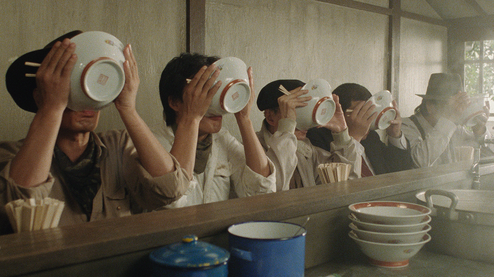

FOOD: The Primal Theme of Tampopo
"Food might be the key point to survival, nonetheless..."
by: Pim Vogels
02/23/2023, featured in Issue Two: Depths of Cinema
Image from Tampopo (1985)
The most relatable films convey primal themes that explore human impulses. These are films about friendship, love, betrayal, death, loss, and revenge, but sadly one very important primal theme is often glanced over: food.
Food might be the key point to survival, nonetheless, it’s often absent in the vast sea of films that focus on a protagonist trying to survive. Luckily some movies focus purely on the art of preparing and consuming food. Think of films like Delicatessen (1991), Festen (1998), The Discreet Charm of the Bourgeoisie (1972), La Grande Bouffe (1973), Spirited Away (2001), and Babette’s Feast (1987). Of course, one film tops them all. A film that’s not just about consuming or preparing food, but about the reverence of food as a lifestyle. That film is director Juzo Itami’s noodle Western ‘Tampopo.’
The film follows two cowboy-like truckers, Gorō (Tsutomu Yamazaki) and Gun (Ken Watanabe), who stop at a noodle shop to feed up before continuing with work. The shop is owned by the friendly Tampopo (Nobuko Miyamoto), a female chef insecure about her noodle-preparing skills. When Tampopo asks the truckers for an honest opinion on her trade, Gorō gives her a brutally honest answer and advice on how to improve. Tampopo can very much appreciate this honesty and begs him to be her teacher and help her shop flourish.
Image from Tampopo (1985)
The main plot quirkily follows Tampopo as she gradually improves thanks to the lessons of various noodle masters spliced between Rocky-like training montages. However, what’s more interesting than this main plot are the short vignettes that explore the different sides of love intertwined throughout, sometimes quite literally. The short stories include an etiquette class on how to properly eat spaghetti, an old lady obsessed with squeezing the food in the supermarket, a housewife rising from her deathbed to cook one last meal, and many more hilariously beautiful moments. Even though a great portion of the film is catered towards Japanese culture, it’s a very universal film.
Itami’s Hollywood and Western genre tropes make for an accessible style, but most of this universality comes from the primal depiction of the themes. Itami plays with this quite brilliantly in the film’s introduction. The fourth wall is broken as a well-dressed man speaks to us, the audience, and asks about our favorite movie snack while he shows his own. Throughout the film we’re constantly tantalized by delicious dishes which we can almost smell and taste. This interaction keeps us glued to the screen and longing for a bowl of ramen noodles weeks after the film has ended. I wonder why this primal theme, food, is not explored as often as, say, love and death? Why aren’t there more films like Ratatouille (2007), My Dinner with André (1981), Jídlo (1992), Chef (2014), and of course Tampopo? Yes, it’s true many films have amazing food scenes. Hopefully in the future we’ll see more films that elevate food beyond portrayal and treat food as a lifestyle; breathe food, just like Tampopo.